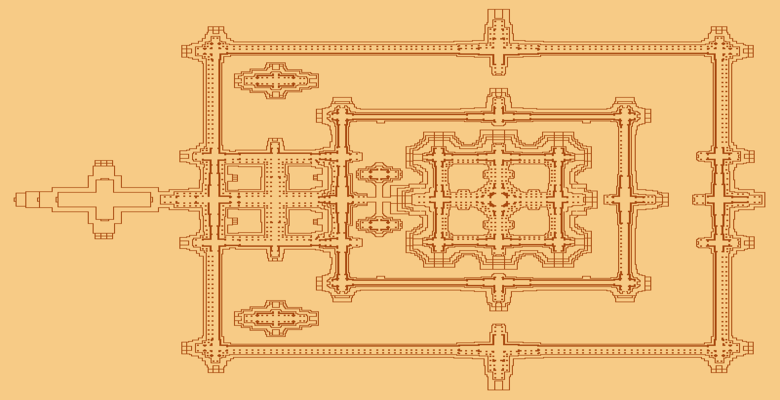

55555
5555
Angkor Wat is an enormous Buddhist temple complex located in northern Cambodia. It was originally built in the first half of the 12th century as a Hindu temple. Spread across more than 400 acres, Angkor Wat is said to be the largest religious monument in the world. Its name, which translates to “temple city” in the Khmer language of the region, references the fact it was built by Emperor Suryavarman II, who ruled the region from 1113 to 1150, as the state temple and political center of his empire. Originally dedicated to the Hindu god Vishnu, Angkor Wat became a Buddhist temple by the end of the 12th century. Although it is no longer an active temple, it serves as an important tourist attraction in Cambodia, despite the fact it sustained significant damage during the autocratic rule of the Khmer Rouge regime in the 1970s and in earlier regional conflicts.
Where Is Angkor Wat?
Angkor Wat is located roughly five miles north of the modern Cambodian city of Siem Reap, which has a population of more than 200,000 people. However, when it was built, it served as the capital of the Khmer empire, which ruled the region at the time. The word “Angkor” means “capital city” in the Khmer language, while the word “Wat” means “temple.” Initially, Angkor Wat was designed as a Hindu temple, as that was the religion of the region’s ruler at the time, Suryavarman II. However, by the end of the 12th century, it was considered a Buddhist site. Unfortunately, by then, Angkor Wat had been sacked by a rival tribe to the Khmer, who in turn, at the direction of the new emperor, Jayavarman VII, moved their capital to Angkor Thom and their state temple to Bayon, both of which are a few miles to the north of the historic site. As Angkor Wat’s significance within the Buddhist religion of the region increased, so too did the legend surrounding the site. Many Buddhists believe the temple’s construction was ordered by the god Indra, and that the work was accomplished in one night. However, scholars now know it took several decades to build Angkor Wat, from the design phase to completion.
Angkor Wat’s Design?
Although Angkor Wat was no longer a site of political, cultural or commercial significance by the 13th century, it remained an important monument for the Buddhist religion into the 1800s. Indeed, unlike many historical sites, Angkor Wat was never truly abandoned. Rather, it fell gradually into disuse and disrepair. Nonetheless, it remained an architectural marvel unlike anything else. It was “rediscovered” in 1840s by the French explorer Henri Mouhot, who wrote that the site was “grander than anything left to us by Greece or Rome.” The compliment can likely be attributed to the temple’s design, which is supposed to represent Mount Meru, the home of the gods, according to tenets of both the Hindu and Buddhist faiths. Its five towers are intended to recreate the five peaks of Mount Meru, while the walls and moat below honor the surrounding mountain ranges and the sea. By the time of the site’s construction, the Khmer had developed and refined their own architectural style, which relied on sandstone. As a result, Angkor Wat was constructed with blocks of sandstone. A 15-foot high wall, surrounded by a wide moat, protected the city, the temple and residents from invasion, and much of that fortification is still standing. A sandstone causeway served as the main access point for the temple. Inside these walls, Angkor Wat stretches across more than 200 acres. It’s believed that this area included the city, the temple structure and the emperor’s palace, which was just north of the temple. However, in keeping with tradition at the time, only the city’s outer walls and the temple were made of sandstone, with the rest of the structures built from wood and other, less durable materials. Hence, only portions of the temple and city wall remain. Even so, the temple is still a majestic structure: At its highest point—the tower above the main shrine—it reaches nearly 70 feet into the air. The temple walls are decorated with thousands of bas-reliefs representing important deities and figures in the Hindu and Buddhist religions as well as key events in its narrative tradition. There is also a bas-relief depicting Emperor Suryavarman II entering the city, perhaps for the first time following its construction.
Angkor Wat Today ?
Unfortunately, although Angkor Wat remained in use until fairly recently—into the 1800s—the site has sustained significant damage, from forest overgrowth to earthquakes to war. The French, who ruled what is now known as Cambodia for much of the 20th century, established a commission to restore the site for tourism purposes in the early 1900s. This group also oversaw ongoing archeological projects there. While restoration work was accomplished in bits and pieces under French rule, major efforts didn’t begin in earnest until the 1960s. By then, Cambodia was a country transitioning from colonial rule to a limited form of constitutional monarchy. When Cambodia fell into a brutal civil war in the 1970s, Angkor Wat, somewhat miraculously, sustained relatively minimal damage. The autocratic and barbarous Khmer Rouge regime did battle troops from neighboring Vietnam in the area near the ancient city, and there are bullet holes marking its outer walls as a result. Since then, with the Cambodian government undergoing numerous changes, the international community, including representatives of India, Germany and France, among others, have contributed to the ongoing restoration efforts. The site remains an important source of national pride for Cambodians. In 1992, it was named a UNESCO World Heritage site. Although visitors to Angkor Wat numbered in just the few thousands at the time, the landmark now welcomes some 500,000 visitors each year—many of whom arrive early in the morning to capture images of the sunrise over what still is a very magical, spiritual place.
Sources
Angkor. World Heritage Convention. UNESCO.
Ray, Nick. “Angkor what? Getting to know Cambodia’s most iconic temple.” LonelyPlanet.com.
Glancey, J. “The surprising discovery at Angkor Wat.” BBC.com.
Hoeller, S-C. (2015). “Here’s why Angkor Wat was just named the best tourist attraction in the world.”
BusinessInsider.com.
Cripps, K. (2017). “Angkor Wat travel tips: Expert advice on visiting Cambodia’s ancient ruins.” CNN.com.
Author:--- History.com Editors
URL :--- https://www.history.com/topics/landmarks/angkor-wat
Publisher:--- A&E Television Networks